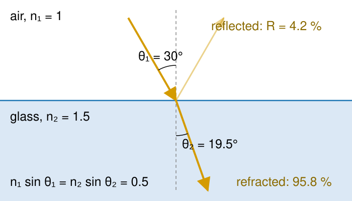
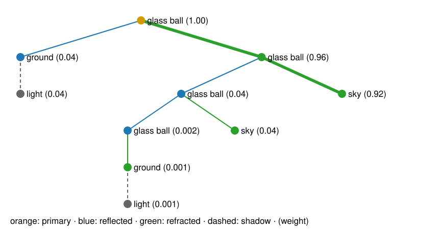
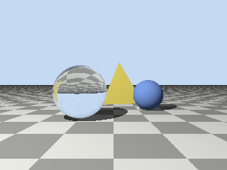
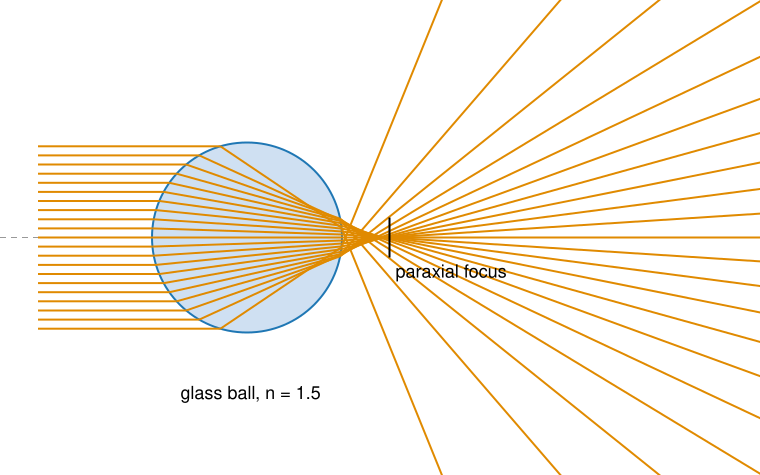

Ray casting finds what each pixel sees. A ray tracer keeps going from the hit point and asks more questions, each answered by another ray (Whitted, 1980).
Shadow rays: can the hit point see the light? And why floating point makes shadow acne.
Mirrors: the reflected ray.
Glass: refraction and Snell’s law, total internal reflection, and the Fresnel split between reflected and transmitted light.
Recursion: the ray tree of one pixel, and a depth limit.
What this cannot do, and the bridge to lenses and microscopes.
Slides titled The math give the formulas and proofs; the ideas are complete without them.
Shadow rays
From the hit point \mathbf p, send one more ray towards each light.
If it hits anything before reaching the light, \mathbf p is in shadow for that light: drop that light’s direct term (keep the ambient light).
One extra ray per light per hit; it only needs any hit before the light, not the nearest.
A rasteriser cannot ask this question: it needs a separate pass that renders the scene from the light (a shadow map). A ray tracer just asks.
Point lights give hard shadows: a point is either lit or not. Soft shadows need lights with an area (unit 4).
Shadow acne
The shadow ray starts on the surface. In floating point, the computed hit point lies a tiny bit above or below the true surface, and the shadow ray can hit its own surface again at t \approx 10^{-7}: speckled, wrongly dark pixels.
Fix: start at \mathbf p + \varepsilon\mathbf n (or ignore hits with t < \varepsilon).
In the demo (64 × 48, hit points stored in float32 as a GPU would): with \varepsilon = 0, 100 of the 1328 ground pixels are dark; with \varepsilon = 10^{-4}, 46 (the real shadows).
Too large an \varepsilon makes the shadow ray start beyond a thin object close to the surface: light leaks under it (in the demo, a tile 0.12 above the floor casts no shadow at all at \varepsilon = 0.2).
Recall Floating point: floats are spaced proportionally to their size, so a fixed \varepsilon that works near the origin is too small far away.
Mirror reflection

A mirror sends the ray on in the mirror direction: angle of reflection = angle of incidence, in the plane of the ray and the normal.
Trace the reflected ray and add what it sees, times the mirror’s reflectance (a tinted mirror: per colour).
Same formula as the Phong highlight of the 3D graphics day, now for the whole incoming ray.
Two facing mirrors: the reflected ray hits the other mirror, and again, and again… we need a depth limit.
The math: reflection
Split the (unit) incoming direction into parts along and across the unit normal:
\mathbf d = \underbrace{(\mathbf d\cdot\mathbf n)\mathbf n}_{\mathbf d_\perp} + \underbrace{\mathbf d - (\mathbf d\cdot\mathbf n)\mathbf n}_{\mathbf d_\parallel}.
A mirror keeps the part along the surface and flips the part along the normal:
\mathbf r = \mathbf d_\parallel - \mathbf d_\perp = \mathbf d - 2(\mathbf d\cdot\mathbf n)\,\mathbf n.
Works whichever way \mathbf n points (the sign of \mathbf n cancels in (\mathbf d\cdot\mathbf n)\mathbf n).
Example: \mathbf d = (1, -1, 0)/\sqrt2 onto a floor with \mathbf n = (0, 1, 0): \mathbf r = (1, 1, 0)/\sqrt2.
Refraction: Snell’s law
Light travels slower in glass or water than in air, by the factor n, the refractive index: air 1.00, water 1.33, glass about 1.5, immersion oil 1.518, diamond 2.42.
At the boundary the ray bends. Picture a line of marching soldiers hitting mud at an angle: the side that reaches the mud first slows down first, and the line turns.
Snell’s law, with angles measured from the normal: n_1 \sin\theta_1 = n_2 \sin\theta_2.
Into a denser medium (n_2 > n_1) the ray bends towards the normal; out of it, away from the normal.
Air → glass (n_2 = 1.5) at 30°: \sin\theta_2 = 0.5/1.5, \theta_2 = 19.5° (the figure on the previous slide).
The math: Snell’s law in vector form
With unit \mathbf d, \mathbf n facing the incoming ray (\mathbf d\cdot\mathbf n < 0), c_1 = -\mathbf d\cdot\mathbf n = \cos\theta_1 and \eta = n_1/n_2:
\mathbf t = \eta\,\mathbf d + \Big(\eta c_1 - \sqrt{1 - \eta^2(1 - c_1^2)}\Big)\,\mathbf n.
The tangential part of the direction is scaled by \eta (that is Snell: \sin\theta_2 = \eta\sin\theta_1); the normal part is whatever makes \lVert\mathbf t\rVert = 1, and it must point into the second medium.
The square root is \cos\theta_2. If its argument 1 - \eta^2\sin^2\theta_1 is negative there is no refracted ray: total internal reflection.
Why the light bends: Fermat’s principle, light takes the path of least time; with different speeds on the two sides, the fastest path is bent.
Total internal reflection
From glass into air, \sin\theta_2 = 1.5\sin\theta_1. Beyond the critical angle there is no solution:
R grows towards 1 at grazing angles: a lake is a mirror at sunset; the edges of a glass look bright.
Matching indices makes an interface invisible (no reflection, no bending): a glass bead in immersion oil disappears. That is why oil immersion works.
Unpolarised light: R is the average of two polarisations. Practical shortcut: Schlick’s formula R \approx R_0 + (1 - R_0)(1 - \cos\theta)^5 (air–glass: 0.07 at 60° against 0.089 exact; 0.65 at 85° against 0.61).
The math: Fresnel
With \cos\theta_1, \cos\theta_2 from Snell (stated here; the derivation needs Maxwell’s equations):
Brewster’s angle\tan\theta_B = n_2/n_1 (56.3° air → glass): R_p = 0, the reflection is fully polarised (polarising sunglasses cut it).
Energy: R + T = 1 at every split; a ray tracer that keeps both branches conserves light.
Try it: rays in 2D
Whitted recursion: the ray tree
At every hit, colour = local shading (with shadow rays) + R · trace(reflected) + (1 - R) · trace(refracted).
Each glass hit doubles the rays: one pixel becomes a tree of rays.
Every branch carries a weight: the product of the R and 1 - R factors along the way.
Stop at a depth limit, and when the weight is tiny. Depth 0 is plain ray casting.
The example: one pixel through a glass ball (depth 5): 10 rays.

The math: the size of the ray tree
If every hit splits in two (glass everywhere), a tree of depth D has 1 + 2 + \dots + 2^D = 2^{D+1} - 1 rays, plus the shadow rays: 15 for D = 3, 2047 for D = 10.
With a weight cut-off: each reflection keeps R \approx 0.04, each refraction 0.96. A branch with a reflections and b refractions has weight 0.04^a\,0.96^b; with a cut-off of 10^{-3}, at most two reflections survive (0.04^2 = 0.0016). The number of rays up to depth D is then at most \sum_{L \le D}\big[1 + L + \binom L2\big]: 41 instead of 63 for D = 5, 231 instead of 2047 for D = 10: polynomial instead of exponential.
Mirrors facing each other do not split, so the tree is a chain of length D; only the depth limit stops it.
Try it: ray trees
What Whitted ray tracing cannot do

It follows only the mirror and refraction directions, and point lights.
Soft shadows: a lamp with an area gives a half-shadow; one shadow ray to one point cannot see it.
Colour bleeding: a white wall next to a red one turns pinkish, because light bounces off the red wall in all directions.
Caustics: light focused through glass onto a diffuse floor. Whitted’s shadow ray from the floor hits the glass ball and gives up: the shadow behind a glass ball is black.
Glossy surfaces, between mirror and matte.
All of these need light arriving from every direction at a point: an integral over directions, unit 4 (Path tracing).
Lenses: rays through glass

A glass ball focuses parallel light, but not to one point: rays far from the axis cross it earlier (spherical aberration). In the demo: paraxial focus 7.5 mm behind the centre of a 5-mm ball, rim rays 2.3 mm earlier.
A lens is two refractions; different colours bend differently (dispersion, chromatic aberration).
Refractive-index mismatch in a microscope: an oil objective focused into a watery sample. The rays bend at the coverslip, so the focus lies shallower than nominal (in the demo 6.5 → 5.7 for paraxial rays, 5.1 for the marginal ones) and smeared along the axis. Distances in z are then wrong.
Rays tell you where the light goes; how small the focus can be is set by diffraction: Image formation.
Summary
Shadow ray to each light: lit or not. Start it a little off the surface (\varepsilon): too small gives acne, too large leaks.
Mirror: \mathbf r = \mathbf d - 2(\mathbf d\cdot\mathbf n)\mathbf n.
Refraction: n_1\sin\theta_1 = n_2\sin\theta_2; towards the normal into the denser medium. Total internal reflection beyond \sin\theta_c = n_2/n_1.
Fresnel: R reflected, 1 - R transmitted; 4 % head-on for glass, \to 1 at grazing angles; 0 for matched indices.
Whitted: local shading + R · reflected + (1 - R) · refracted, recursively; a ray tree per pixel, cut by depth and weight.
Missing: soft shadows, colour bleeding, caustics: unit 4.